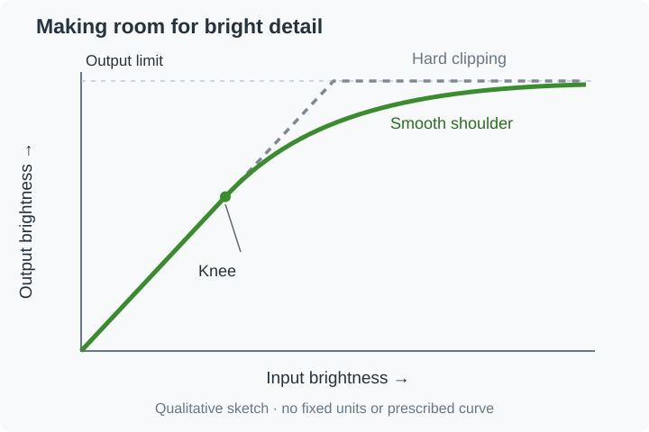

Highlight Roll-Off in Tone Mapping
Highlight roll-off is the gently flattening part of a tone-mapping curve near its bright end. It lets successively brighter source values remain distinguishable while using progressively less of the remaining output range.
Think of sunlight on a white shirt. Hard clipping can turn several bright folds into the same flat white. A roll-off can retain those folds, although the differences between them become smaller.

Qualitative sketch, not a measured display response or a particular curve implementation. Axis spacing is illustrative.
The knee is where the compromise begins
The point where the response starts bending is often called the knee. Above it, the slope decreases: a large increase in source brightness produces a smaller increase in output brightness. BT.2390 describes an example that uses a smooth knee to adapt to a display's available luminance range.
Starting the bend earlier gives the highlights more room to approach white. It also changes a wider part of the picture. Starting later can leave more ordinary tones alone, but squeezes the brightest details into a narrower output interval. A shoulder that is too compressed can preserve numerical differences that are barely visible to the viewer.
The actual shape depends on the curve and its parameters. Mobius, for example, has a lower section that remains unchanged before its transition, while Hable also shapes darker values. Roll-off is a feature of the response, not the name of a single algorithm.
For an Emby playback comparison, inspect bright textures alongside faces and ordinary surfaces. Retaining a lamp's filament is less useful if the rest of the scene becomes undesirably dim. Also check saturated lights: preserving highlight brightness detail does not automatically preserve their color, which is part of gamut mapping.
See Also
- What a Tone-Mapping Curve Controls
- Tone Mapping Curve: Mobius
- Tone Mapping Curve: BT.2390
- Gamut Mapping